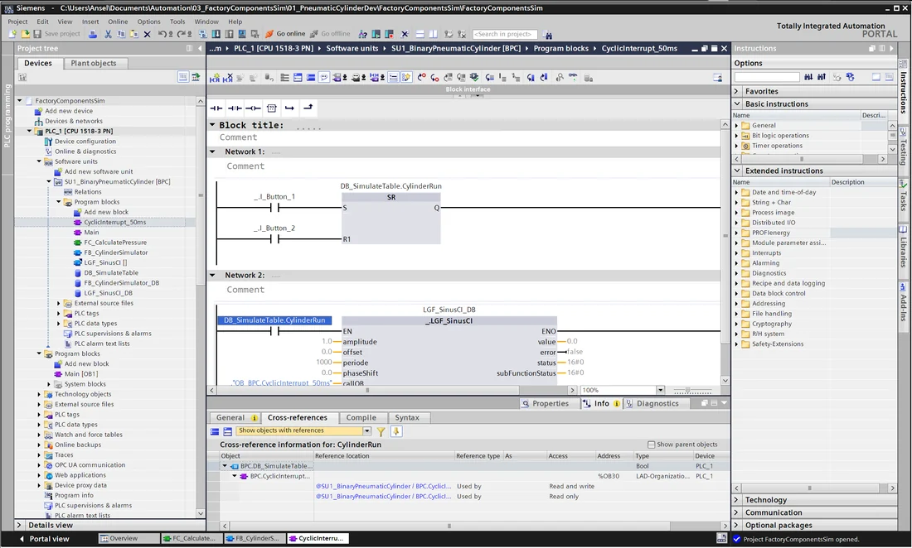
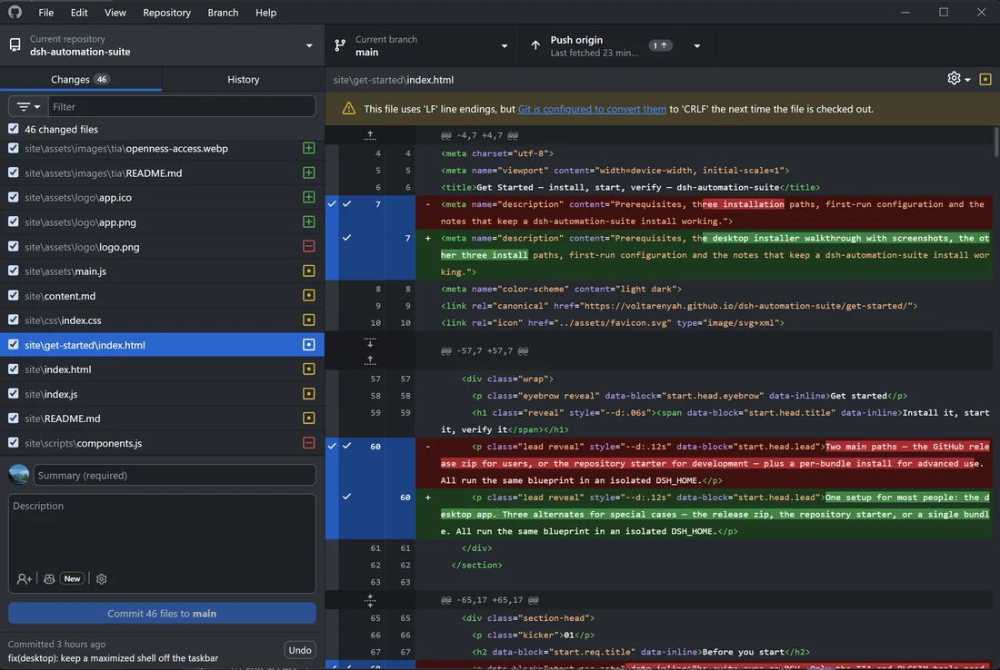
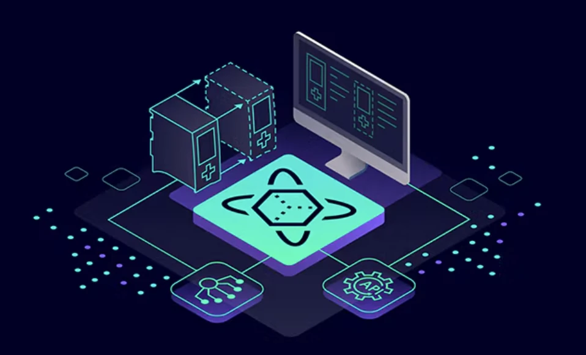

It bundles a set of core plugins that extend the agent with industrial-automation capabilities — TIA Portal access, an engineering knowledge graph, Git and PLCSIM.
Know your project, help with your work.

Blocks exported, cross-references rebuilt, program sections translated, drawings indexed — so the agent knows how the project fits together, and answers questions based on necessary context.

Block fingerprints show which blocks actually changed. The agent reads that against the change context and makes the commit for you, keeping the version history continuous instead of a pile of binary files.

PLCSIM Advanced is wired in through its API 4.0 — power on and off, download, tag read and write, snapshot and restore — so the agent can exercise the program and judge how it really behaves, not only what the source says.
A PLC project is more than its program. Once the drawings, change history, documents and hardware around it are in reach, the agent works from the project's real background — and can answer how things came to be, not only what the code says today.
Six families, one profile. Statuses follow the repository roadmap — nothing planned is presented as shipped.
See the componentsOne setup, a private DSH home, no build step. The TIA tools are ready once Portal V17 is installed.